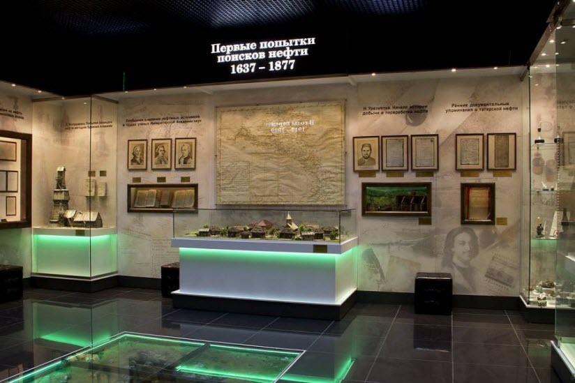
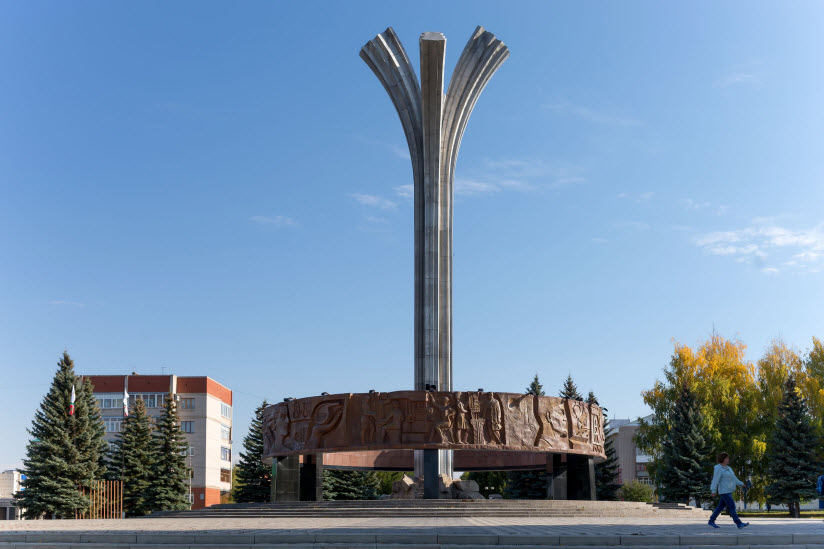
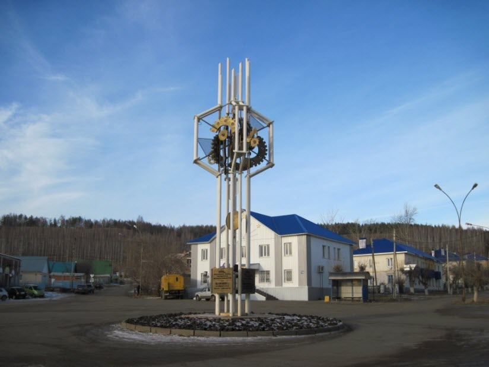

Лениногорск — это не просто точка на карте Татарстана, а город с душой, где суровый быт нефтяников переплетается с древними легендами о серебряных горах.
История Лениногорска ведет начало от села Новая Письмянка, основанного около 1795 г. переселенцами из села Старая Письмянка (Письмянская слобода основана отставными солдатами русского и польского происхождения, казаками в 1730-х гг. в период строительства Новой Закамской засечной черты). До 1860-х гг. жители относились к категории государственных крестьян. Их основные занятия в этот период – земледелие и скотоводство, был распространен мукомольный промысл. В 1859 г. построена церковь, в 1885 г. открыта церковно-приходская школа. В 1883 г. село Новая Письмянка стало волостным центром. В начале ХХ в. здесь располагались волостное правление, становой, конный военно-призывной участок, земская станция; функционировали церковь, земская школа (открыта в 1903 г.), 8 водяных мельниц.
Сейчас в Лениногорске живет около 62 тысячи человек. (русских-43,3%, татар-42,8%, мордвы-5,8%, чувашей-5,3%


